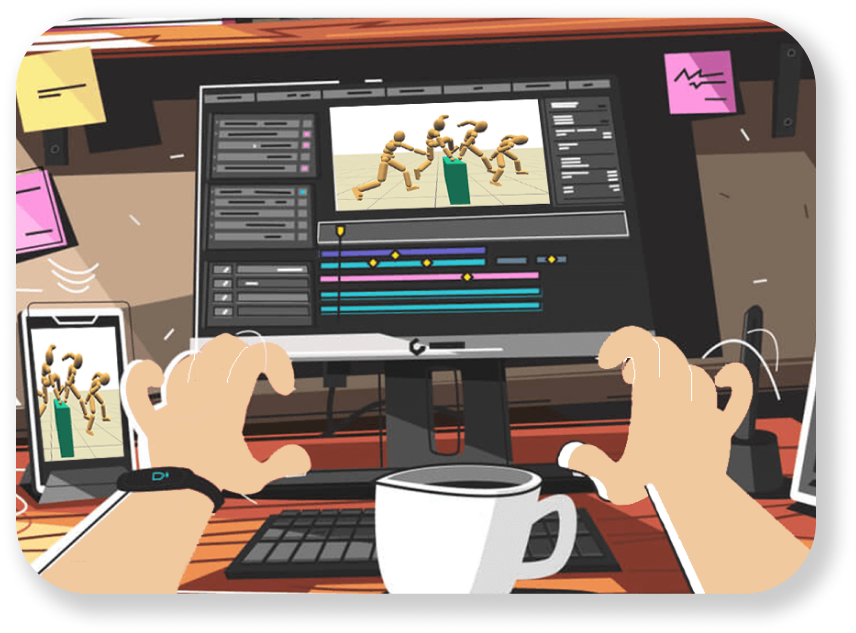
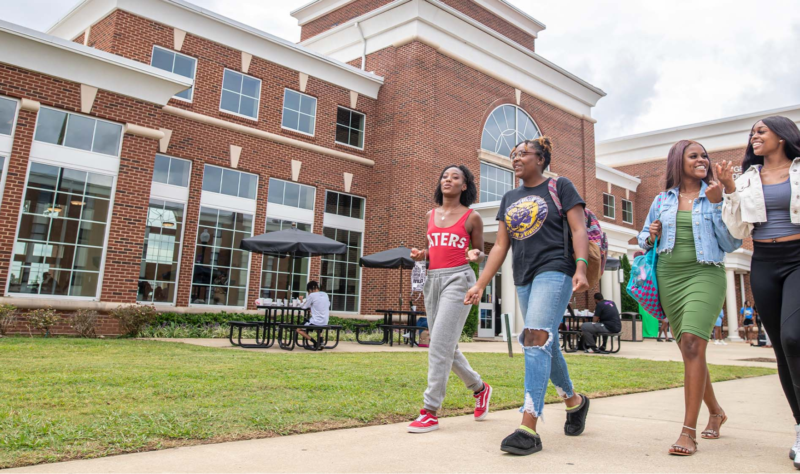

Campus Life
Academic Life
Jump To Section
Powered by Miasco 2023


To the top

A Historical Perspective of the Art and Science of Animation

Top 10 Study Hacks to Elevate Your Learning Experience
This concludes the Navigating College Life: A Survival Guide for
Freshmen! Achieving balance is a fundamental aspect of life, and college
serves as an excellent opportunity for young adults to learn and grow in
this regard.
Wrapping Up
Spending time on campus, especially in your freshman year, allows you to
familiarize yourself with the dynamics of campus life and connect with
fellow students. While occasional visits home may be enjoyable, frequent
trips may lead to a sense of isolation or discomfort on campus. Immerse
yourself in the campus atmosphere to build a sense of belonging.
22. Familiarize Yourself with Campus
The career services center is a valuable campus resource for students.
Advisors can assist you in refining your resume, honing interview
skills, and navigating the job search process. Freshman year is an ideal
time to explore your interests and potential career paths related to
your major.
21. Utilize Career Services
College is a time to step out of your comfort zone and explore diverse
activities. Embrace the chance to try new hobbies, sports, or
activities. With a new environment and people, seize the opportunity to
diversify your experiences and discover unexplored facets of yourself.
20. Try Something New
Actively participating in campus life goes beyond making new
connections; it serves as a substantial addition to your resume. Explore
opportunities such as community service, clubs, organizations,
intramural sports, and academic honors societies. These experiences not
only help you acquire new skills but also foster friendships and uncover
your passions.
19. Engage in Campus Life
This section focuses on embracing the vibrant opportunities that campus
life offers for college students, encouraging active participation and
personal growth.

Campus Life
Early registration ensures a better selection of classes. Some colleges
randomize registration order, so consult with your academic adviser to
plan your courses in advance. Be prepared for registration opening to
secure your preferred classes.
18. Register for Classes Early
Make sure to read and save this document in a safe place, and refer back
to it when you have course questions. Professors include the names of
required textbooks, how to contact them, their office hours, assignment
schedules, class meeting times, and the room.
You may have come across this word when talking about university life,
but have no clue what it means. The syllabus is a vital resource and
magic guide for understanding each of your classes. Professors upload
the syllabus online or hand it out during the first week of classes.
17. Review Your Syllabus
Leverage university resources like tutoring, mentoring, and learning
centers, as well as writing centers that offer proofreading and
improvement suggestions for assignments. These services are often free,
so make the most of them.
16. Utilize Academic Resources
Set academic goals at the beginning of each semester and work diligently
to achieve them. Consistently refer to study tips, seek help when
needed, and consider meeting with professors for academic assistance.
15. Strive for Academic Excellence
Exchange phone numbers with classmates not only for building friendships
but also for collaborative learning. This can be your study partner,
someone to share notes with, or a resource for missed class materials.
14. Exchange Contact Information with
Classmates
Establish a relationship with your professors by participating in class,
asking questions, and meeting them during office hours. Building these
connections can prove beneficial for academic and professional support.
13. Get to Know Your Professors
The other part of this tip is to learn how to study. College isn’t like
high school, where you can sometimes get by with little to no studying.
The course content is much more complex and requires a higher level of
thinking, so allocate enough time to master each topic. This looks
different for everyone; maybe you like to take notes, review class
slides, visit a tutor, or even ask your professor for permission to
record lectures.
Find a place (or places) on campus where you can study effectively. It
should be a place that’s quiet and free of distractions where you can
focus. Maybe that’s your dorm room, the library, or a café–find a place
that suits you!
12. Identify Your Ideal Study
Environment
College assignments differ from high school, ranging from semester-long
projects to exams. Procrastination is the enemy; start early, pace
yourself, and stay on top of your coursework to avoid last-minute
cramming.
11. Stay Ahead on Academic Tasks
Unlike high school, college doesn't enforce attendance, but it's crucial
for gathering essential information. Professors often cover material
exclusively in lectures, and in some cases, attendance might be
mandatory.
10. Attend Your Classes
This segment of the College Survival Guide is dedicated to navigating
the academic aspects of college life, offering study tips, and sharing
valuable suggestions.

Academic Life
Recognize that college life comes with challenges. If you feel
overwhelmed, anxious, or lost, don't hesitate to seek help. Utilize the
resources available, such as counseling and health centers, or confide
in friends and family for guidance and support.
9. Ask for Help if You Need it
College marks the transition to adulthood, requiring a heightened sense
of responsibility. Acknowledge that your actions and decisions are your
own. If you neglect studying or prioritize social activities over
academics, take ownership and learn from the consequences.
8. Embrace Responsibility
Create and stick to a budget to keep track of expenses. Pace your
spending to ensure financial stability throughout the semester. Consider
part-time jobs for additional income.
7. Budget
Your health is the cornerstone of a successful college life. Prioritize
proper nutrition, exercise, outdoor activities, and sufficient sleep to
maximize your overall well-being.
6. Stay Healthy
Homesickness is a common experience for freshmen. Coping mechanisms
vary; some find solace in calling home, while others prefer cooking
familiar meals or having regular video calls with family. Identify what
works best for you.
5. Cope with Homesickness
While immersing yourself in college life, make an effort to regularly
connect with family and friends back home. A word of caution—while
staying connected is crucial, excessive calls may intensify
homesickness. Strike a balance to fully enjoy your college environment.
4. Connect with Home
Juggling academics, social life, and activities can be challenging.
Utilize a planner or calendar to stay organized, ensuring you keep track
of deadlines, appointments, and other commitments to avoid overbooking.
3. Stay Organized
Despite a busy college life, allocate time for yourself. Dedicate an
hour or any free time to activities that bring joy or alleviate stress,
such as a walk outdoors. Recognize the importance of self-care in
maintaining overall well-being.
2. Prioritize Self-Care
The first step is to talk to people. Be friendly wherever you go. Get
out of your comfort zone. Be social even if it feels awkward at first.
You will need to build a support network for the next four years. It
might seem intimidating at first, but you’ll find that many people feel
the same way you do, and you probably have a lot more in common with
people than you might think!
Make Friends You have many chances to meet new people on campus, such as
in your dorm, classes, events, clubs, or organizations. Also, if you
make friends in your classes, you can study together and share notes!
1. Make Friends
This section offers guidance on maintaining a healthy personal and
social life, dealing with homesickness, achieving balance, and creating
a fulfilling college experience.
Flex
Blogs
Home
MIASCO